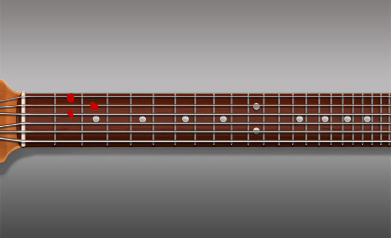

🎸 Аккорды песен
Главная
Исполнители
Жанры
Новые
Популярные
Найти
Аккорд D

Библиотека аккордов
Аккорд D (Ре мажор)
Состав: D-F#-A (Ре-Фа#-Ля)
Характер: Яркий, энергичный, немного напряженный
Применение: Популярен в народной и рок-музыке
Сложность: Средняя, требует растяжки пальцев